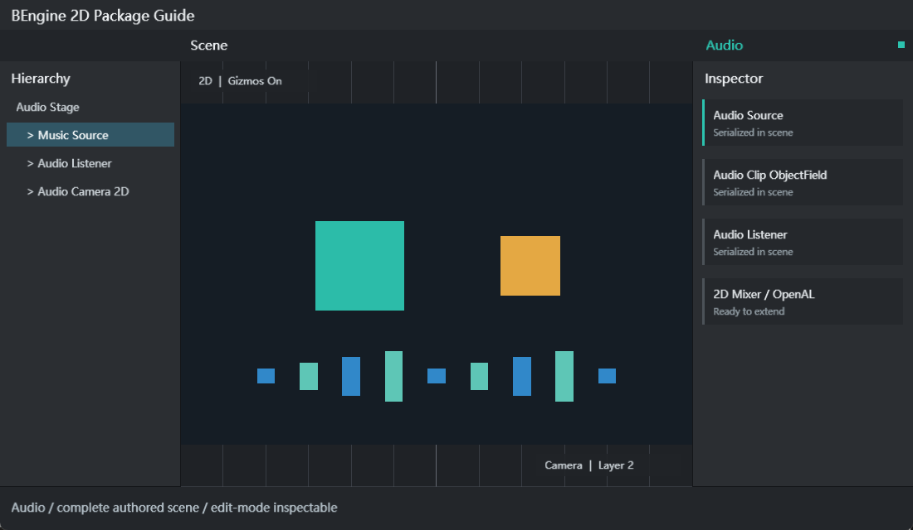

快速开始
- 在
Window > General > Package Manager启用 Audio，导入 Audio Getting Started。 - 从 Project 打开
Assets/Examples/AudioGettingStarted/res/Audio.scene.yaml。 - 选择 Music Source，在 Inspector 检查 Clip、Loop、Volume、Pitch、Pan 和 Play On Awake。
- 打开 Scene、Game、Console 后 Play。Space 暂停，方向键调节音量/声像，R 重新播放。

组件介绍
| 类型 | 职责 | 关键字段 |
|---|---|---|
AudioClip | 保存导入后的 PCM 样本，是可被 Resources/AssetBundle 加载的 BAsset。 | samples、channels、frequency、length、loadState |
AudioSource | 播放 Clip 和一次性音效；按优先级进入 2D 软件混音。 | clip、volume、pitch、panStereo、loop、mute、priority |
AudioListener | 场景监听器标记与全局音量/暂停入口。 | AudioListener.volume、AudioListener.pause |
AudioImporter | 将磁盘 WAV 转换为 Artifact/AudioClip。 | forceToMono、normalize、loadInBackground、preloadAudioData |
BEngine 是 2D 引擎。AudioSource 不读取 Transform 距离，不提供 3D spatial blend、doppler、reverb zone 或 3D 环绕定位。
API
创建和读写 Clip
var clip = AudioClip.Create("Tone", 44100, 2, 44100);
clip.SetData(interleavedPcm, 0);
var copy = new float[interleavedPcm.Length];
clip.GetData(copy, 0);播放控制
var source = GetComponent<AudioSource>();
source.volume = Fix64.Parse("0.8");
source.panStereo = Fix64.Parse("-0.2");
source.Play();
source.PlayOneShot(clickClip, Fix64.Half);PlayDelayed 接受确定性 Fix64 秒数；time、timeSamples 可定位；
Pause/UnPause 保留游标，Stop 清除游标和 one-shot。
编辑器工作流
- 将 WAV 拖入 Project。Importer 校验 RIFF/WAVE、fmt 和 data 块并生成 AudioClip。
- 在 Inspector 修改导入设置后重新导入；Force To Mono 会合并声道，Normalize 提升峰值。
- 从 Project 将 Clip 拖到 Audio Clip ObjectField；类型不匹配时光标明确显示拒绝。
- 字段右侧选择按钮打开 Assets/Scene 双页签 TreeView，可搜索且不显示 Assets 根节点。
- 修改 Source 使用 Undo；Play 中只改变运行镜像，Stop 后恢复编辑态数据。
如何扩展
平台输出实现 IAudioOutput 并用 AudioOutput.SetBackend 安装。提交的是交错 float PCM；
实现需要自行维护设备缓冲，避免在帧热路径分配，并在 Dispose 中释放原生资源。
新增编码格式时，在 Runtime 注册 RuntimeAssetCodecRegistry，在 Editor 注册对应
AssetImporter 和图标。包卸载必须注销静态注册；Inspector 修改依次调用 Undo、赋值、
EditorUtility.SetDirty。
排错
| 没有声音 | 检查 OpenAL、Listener.pause、Source.mute/volume、Clip 引用和 Play 状态。 |
|---|---|
| 导入失败 | 当前只接受未压缩 PCM 或 Float WAV；在 Console 查看具体块/位深错误。 |
| 播放太快/太慢 | 检查 Clip 采样率与 Source pitch；输出端会按设备采样率重采样。 |
| Stop 后参数恢复 | 这是编辑态/运行态隔离，属于预期行为。 |